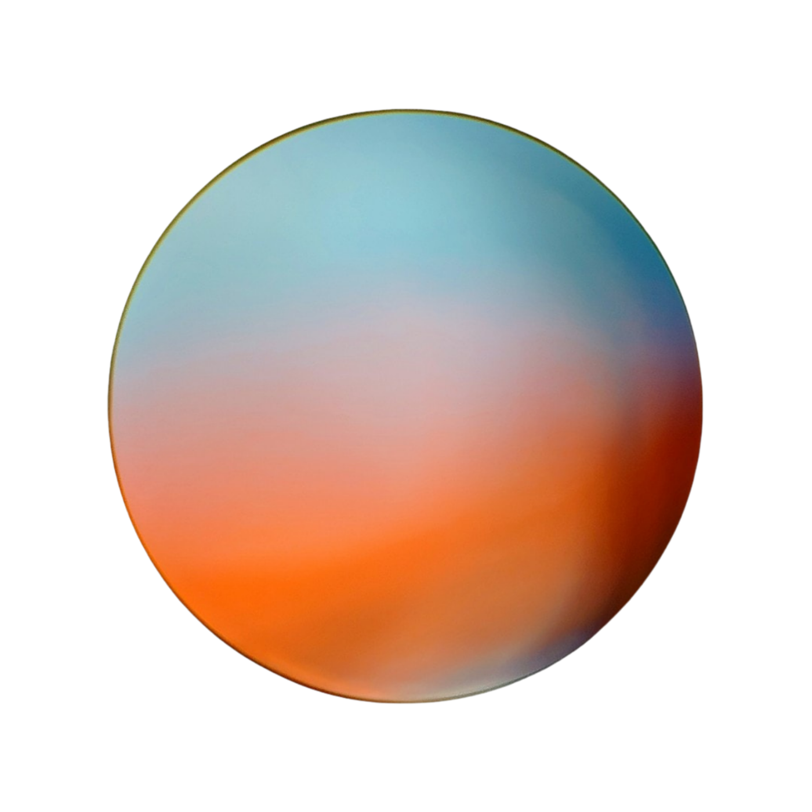
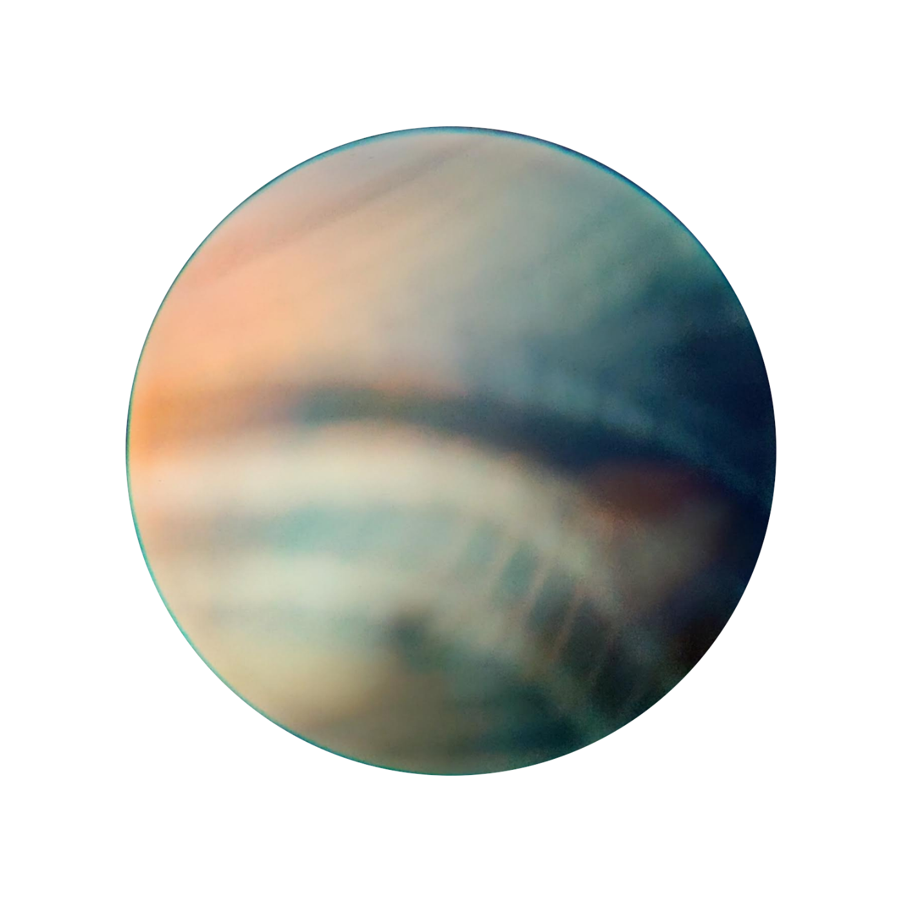
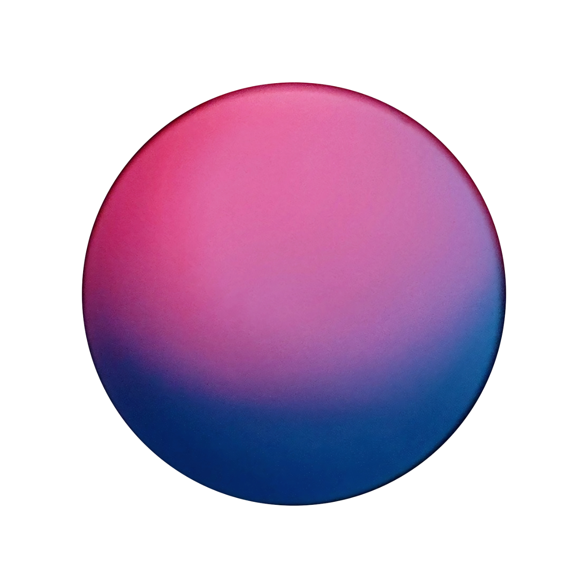
↓ SCROLLjust planets is a way of escaping the ordinary by choosing the planet that resonates the most with u. You can experience the emotion of the planet that you brought into your life in many ways: on your own skin by wearing it, in your home with a print on the wall, or on your belongings through stickers. The possibilities are endless.
Explore through the void and find your own planet.
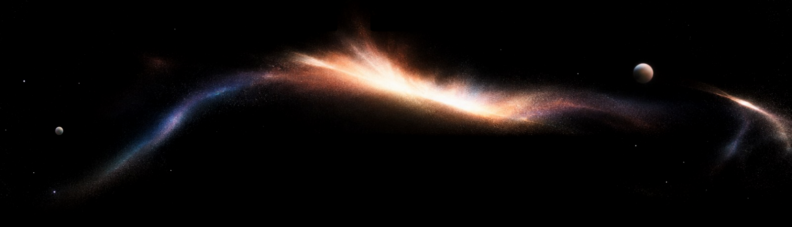
I never felt like I belonged anywhere, so I’ve created my own planets
Using just a pair of binoculars I started exploring life in detail, focusing on colors, textures, shades and shadows
Each planet represent a specific part of the world around us (an object, the nature, animals or humans) and embodies a specific emotion / feeling / state of mind.
Feel free to explore this endless galaxy and find your own planet. The one that you identify with. Make it yours.
Lose yourself to find yourself
.42 42 42 42 42 42 42 42 42 42 42 42 42 42 42 42 42.
EXHIBIT
Just a glimpse of the planets displayed through ordinary means.
2021 — ∞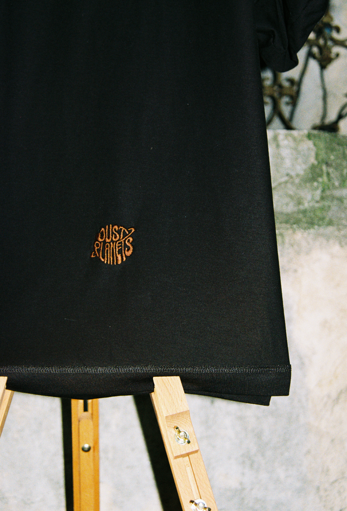
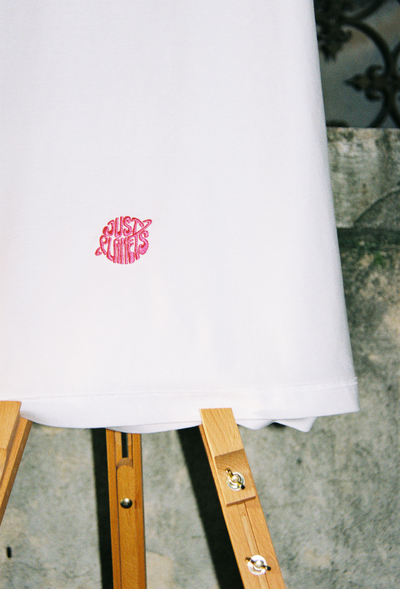
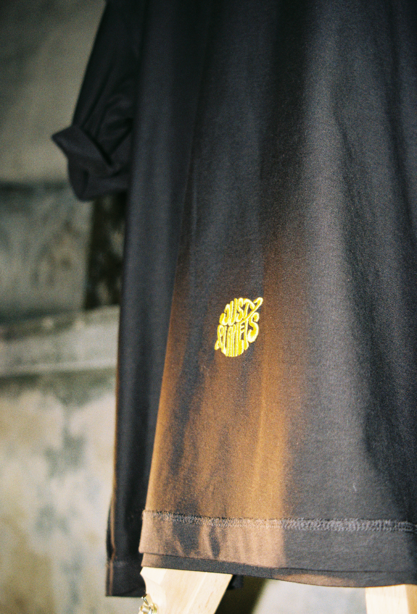
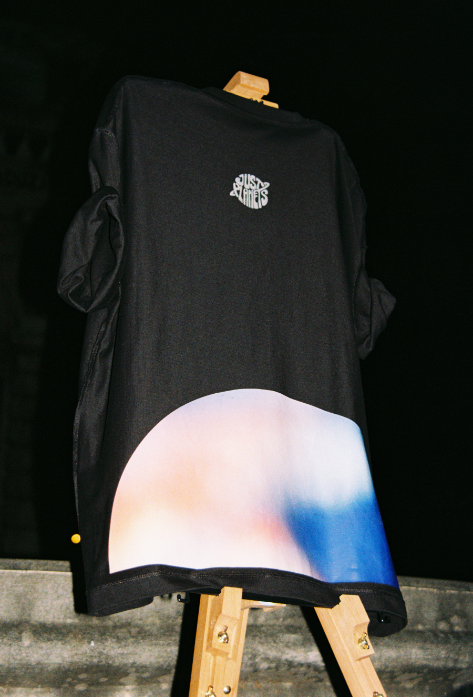
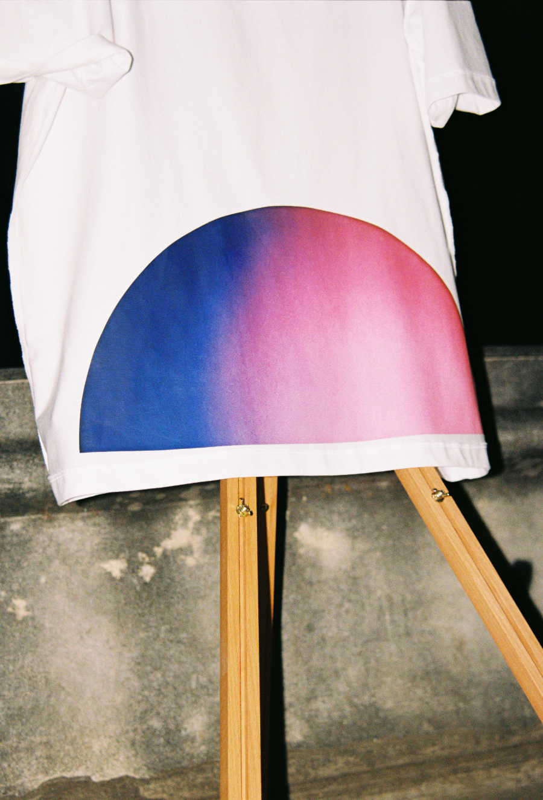
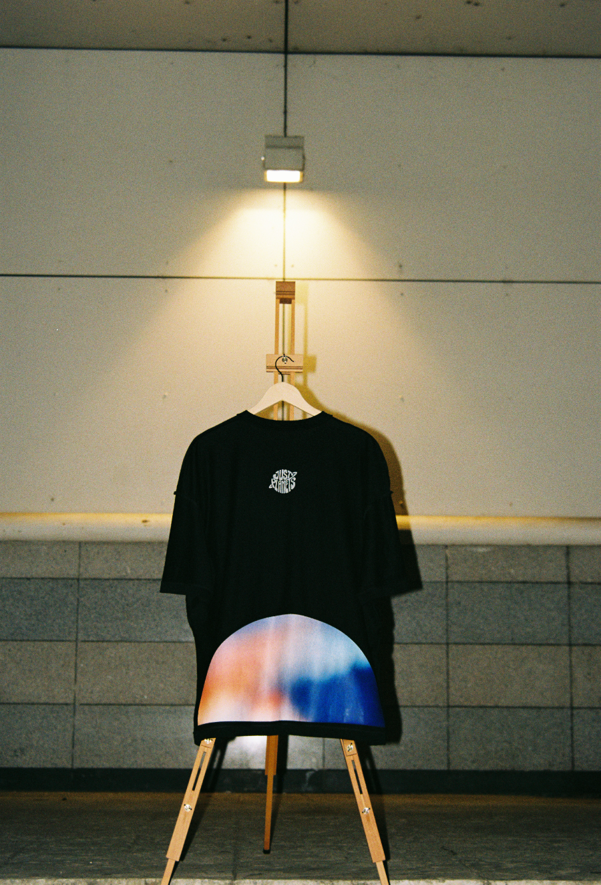
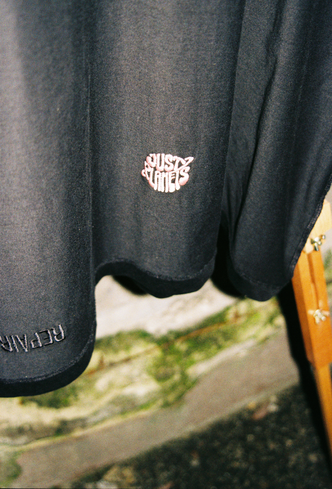
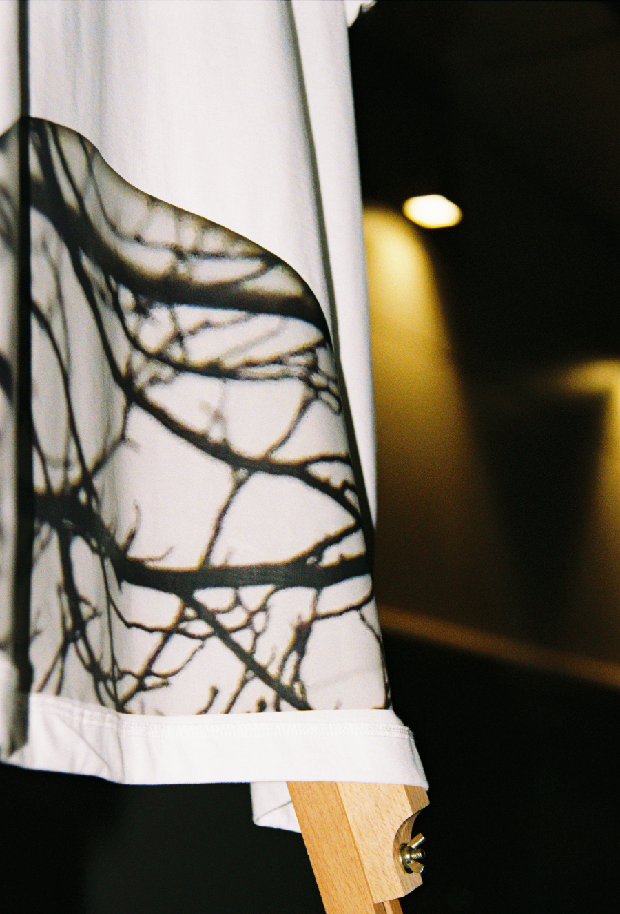
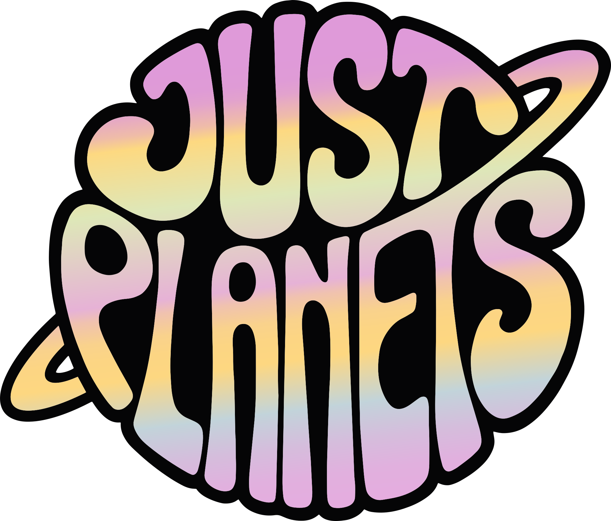